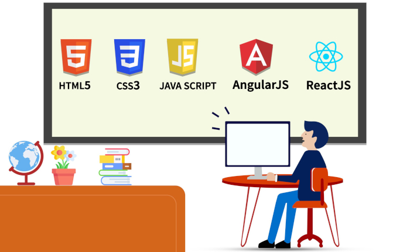
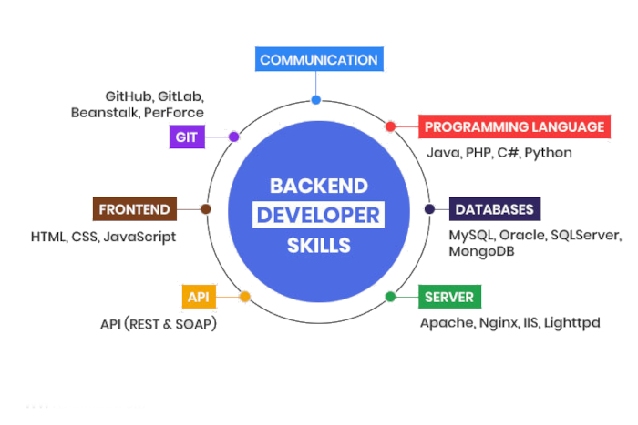

1. Frontend Web Development
Frontend refers to the look and dynamics of the website. For designing frontend , the technologies we need to learn are given as follows : 
- HTML
-
HTML is required for designing basic structure of a website .
- CSS
-
CSS is required for styling of the HTML content .
- Javascript
-
Javascipt is used for adding dynamics to a website like animations , or any functioning of buttons if required .
- Bootstrap
-
Bootstrap is a framework which makes designing complex components like breadcrumbs , navigation bars , carousels etc. a lot more easier .
- jQuery
-
jQuery is another framework which makes writing javascript very concise , short and easy to understand .
- React
-
React is a frontend javascript library developed by meta for building user interfaces easily . It is a very important skill to learn to be a web developer .
- Angular JS
-
Angular JS is open source front end framework used for developing single page web applications .
- Web designing ettiquettes
-
Web designing ettiquettes like colour theory , UI/UX design , typography , ability to use tools like CSS button generator , curve generator , animations etc. are very important for designing a user attractive website .
2. Backend Web Development
Backend refers to behind the scenes work like database management . It is difficuilt as compared to front-end web development , but it is something that makes the website purposeful . Here are some important things required for mastering backend development . 
- SQL
-
SQL stands for structured query language which is used to manage relational databases and processing them .
- Node JS
-
Node JS is an open source javascript runtime environment that executes code outside the browser .
- Express JS
-
Express JS / EJS is a web application framework for Node JS designed for building web applications and.
- APIs
- APIs refers to Application Programming Interface . It allows connection of two different applications in which one application offers a part of its service to the other .
- MongoDB
-
MongoDB is another database language like SQL and MySQL , but is more effective , fast and easy to use .
- Git/Github
-
Github is a web app which provides a Git server plus a number of really useful tools for working with git repositories individually or in teams, such as reporting issues with the code, reviewing tools, project management features such as assigning tasks
and task statuses .